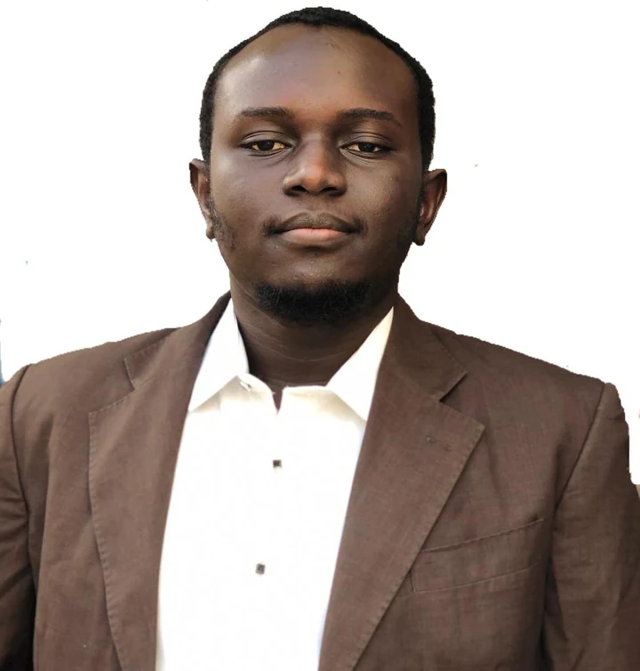

Assistant Lecturer
Kaduna Polytechnic
Teach computing, prepare practical learning materials and assessments, and supervise ND2 projects.
USMAN IDRIS KWARU
I’m a software engineer and lecturer completing an MSc in Cybersecurity. I build web applications, develop authentication and security-focused projects, and teach computing.

01 / Selected work
A selection of client work, personal builds, and academic projects. Each has a story, a purpose, and lessons learned.
7 projects shown.
Earlier work, smaller applications, and experiments. Their scope is labelled so you know what to expect.
02 / A little about me
I’m Usman, a software engineer and Assistant Lecturer at Kaduna Polytechnic. My work connects practical application development, IT operations, and technical education.
I’ve built client websites, dictionary and learning tools, authentication demonstrations, and security prototypes. I enjoy taking a problem apart, turning it into maintainable software, and explaining how the pieces fit together.
I’ve completed my MSc Cybersecurity coursework at Bayero University Kano and am now working on my thesis. I’m open to software engineering roles, entry-level cybersecurity opportunities, and freelance development engagements.
Read my full résuméMSc Cyber Security · Bayero University Kano
Coursework completed · Thesis in progress · GPA 4.25/5.00
BSc Software Engineering · American University of Nigeria
Graduated May 2018 · CGPA 3.25/4.00
From an NGO website to a collaborative dictionary, I focus on what people need the application to do.
Authentication, permissions, validation, and honest documentation are recurring themes in my projects.
Teaching computing and supervising student projects keeps me attentive to clarity, practical examples, and the learning process.
03 / Skills & tools
Skills developed through client applications, personal projects, academic work, and IT operations. React and Node.js experience comes through projects; cybersecurity is an area I’m actively developing.
Experience
Kaduna Polytechnic
Teach computing, prepare practical learning materials and assessments, and supervise ND2 projects.
Federal Road Safety Corps
Coordinated IT activities, supervised IT staff, and supported operational reporting and administration.
Federal Medical Center, Nguru
Processed laboratory results in a hospital management system and supported accurate clinical records.
eHealth Africa
Supported Windows Server and Linux administration, device integration, and IT asset lifecycle activities.
Society for Women Development and Empowerment
Supported internal application improvements and technology work for community programmes.
04 / Let’s connect
I’m open to software engineering roles, entry-level cybersecurity opportunities, and freelance development work. Send me a message about what you’re building.